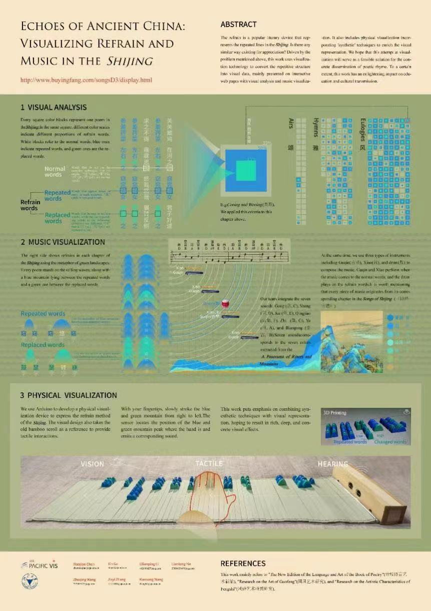
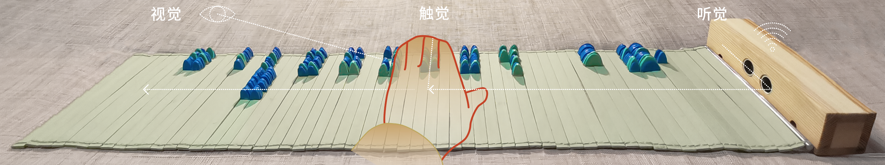

可视化交互网页 →
我们使用D3.js技术构建交互可视化网页，用户在浏览网页时，底部的按钮可以满足其排序和筛选等分析需求。

重章复沓是诗歌的一种表现手法，也是《诗经》章法上的一个重要特点。即诗篇不断使用相同的句式，组合成“句子潮汐”，反复咏唱，从而产生东方特色的音律美。除了以咏唱的方式感受重章复沓之外，可否有更具象的方式感受呢？为可视化复沓结构，我们采用青绿山水隐喻在每两个重复字间竖起一座青色山峰，每两个更换字间竖起一座绿色山峰。每一个方形色块组合代表《诗经》中的一首诗。在同一个方形色块组合中，不同色块面积大小表示不同类型字的占比。白色方块代表普通字，蓝色方块代表重复字，绿色方块代表更换字。
在本项目中，我们采用数据可视化技术将复沓结构转换为可视化数据，并结合音乐可视化以试听融合的交互式网页呈现，同时融入“通感”手法丰富可视化表现。希望我们所做的可视化尝试，能够为诗歌节奏韵律的具象化传达提供一种可行的方案，且在文化教育和传承中有一定启发意义。

我们使用D3.js技术构建交互可视化网页，用户在浏览网页时，底部的按钮可以满足其排序和筛选等分析需求。
实物可视化交互装置在Arduino平台上制作，其可以同时为用户输出视觉、听觉和触觉的感官刺激。实物可视化的视觉设计参考了古代竹简，将青绿色山峰黏贴在竹简上。用户一边通过观望青绿山峰的排列宏观感受《诗经》丰富的复沓结构；一边用指腹从右向左缓缓抚摸青绿山峰，同时听到传感器定位手所在青绿山峰的位置并发出对应的音乐，在通感中体验每首诗不同的复沓节奏和音律。同时，我们使用古琴、萧、鼓三种中国民族乐器作曲。古琴和萧演奏每个字对应的音符，曲至复沓字时奏响鼓声。每一首乐曲都出自《诗经·古谱》中的相应乐谱。

本视频为讲解《诗经》中复沓与音律知识的科普视频，视频以艺术可视化方式向观众呈现具象的内容。 看完以后，你知道什么是《诗经》的复沓结构，它又表现出哪些特征与规律呢？
我们以数字可视化和实物可视化作为创新的教学工具，促进学生多感官学习《诗经》复沓，并将其应用于儿童中文课堂。
数据：复沓标注规则、风诗的复沓标注、雅诗的复沓标注、颂诗的复沓标注。
主要参考文献：《诗经语言艺术新编》、《国风艺术研究》、《风诗艺术特质研究》。